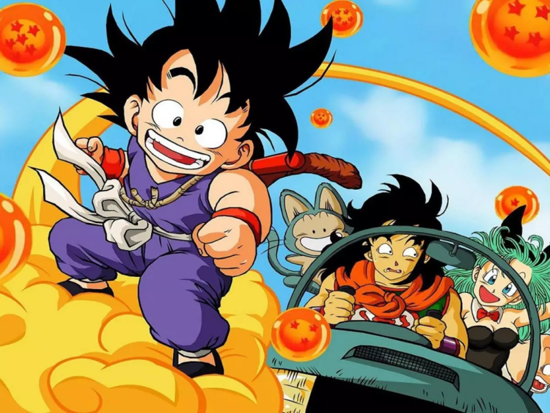
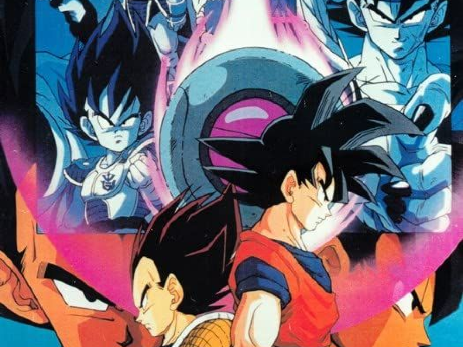
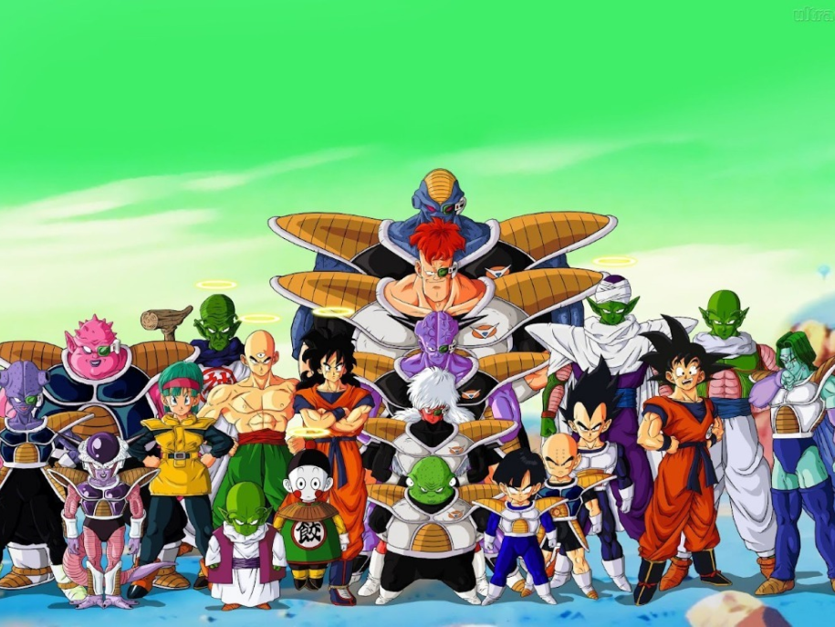
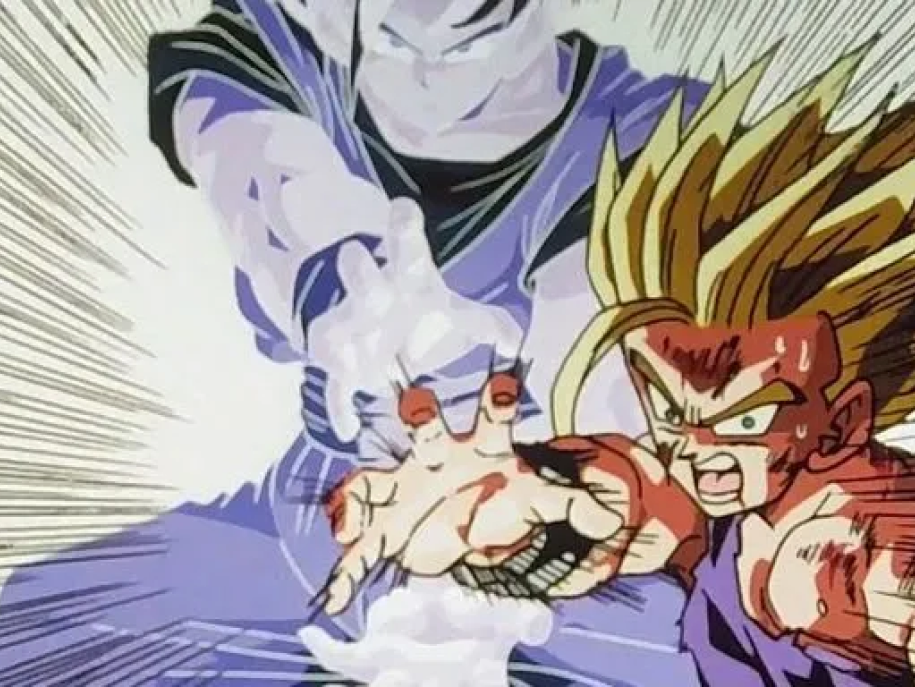
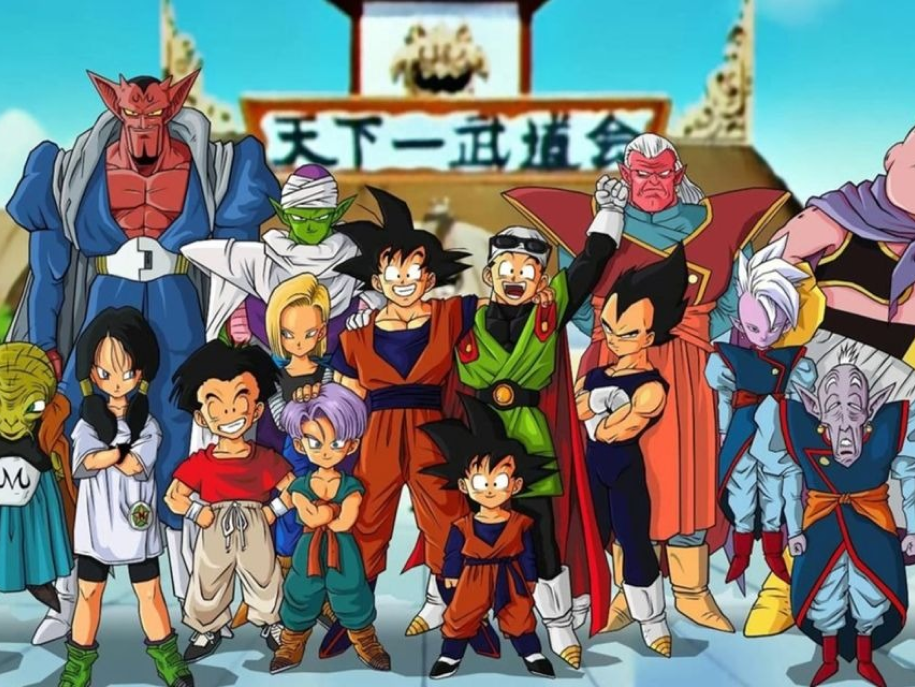

A Historia de Dragon ball
Dragon ball
A série segue as aventuras do protagonista,Son Goku, desde sua infância até a idade adulta enquanto ele treina artes marciais e explora o mundo em busca de sete esferas conhecidas como as Esferas do Dragão, que convocam um dragão que concede um desejo quando reunidas. Ao longo de sua jornada, Goku faz vários amigos e luta contra uma grande variedade de vilões, muitos dos quais também procuram as Esferas do Dragão.
Arco Sayajin
Após 5 anos de tranquilidade, a vida de Goku é abalada novamente com a chegada de Raditz, que afirma ser o irmão mais velho de Goku é um membro da quase extinta raça saiyajin.Após um ano, os Saiyans Vegeta e Nappa chegam à Terra e matam todos os soldados Z com a distinção de Kuririn e Gohan. Goku é ressuscitado pelo Mestre Kame usando as Esferas de Dragão
Arco Freeza
Depois de derrotar a Força Ginyu, nossos próprios heróis têm que se recompor, mas é tarde demais, pois Freeza chegou em força total. Isto faz com que Goku se enfureça e se transforme em um Super Saiyajin pela primeira vez. A verdadeira luta em Namekusei acontece e Goku alcança o Super Saiyan pela primeira vez.
Arco Androides/Cell
Uma criatura inteiramente nova chamada Cell entra em ação com uma tarefa: consumir 2 andróides para atingir sua forma perfeita e acabar com o mundo nesse novo arco de Dragon Ball Z.
Arco Majin Boo
O arco de Majin Boo pertence aos mais longos, por isso, não poderia faltar nesta lista. A temporada trouxe novidades, como as fusões de Vegetto e Gotenks com os brincos Potara e a iniciativa de sugar a energia de Gohan para ressuscitar Majin Boo (que dá nome ao arco).
